3350E vehicle direction control system vdc
- Path
- Descriptions > 33 BRAKING SYSTEM > 3350 DRIVE CONTROL' > 3350E vehicle direction control system vdc
- Kind
- system description
- Applies to
- all engines; all production periods
- Interactive page
- https://sloeber94.github.io/elrnDB-lYpsln/en/#/2427428
Applies to: all engines; all production periods; only with equipment: ESP
GENERAL VIEW
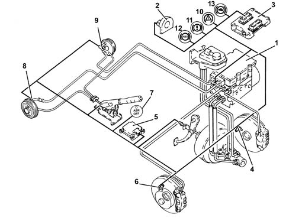
1 - ABS/ESP control unit (with built-in pressure sensor) 2 - Steering angle sensor 3 - Engine management control unit 4 - Left front wheel sensor 5 - Yaw/Y/X sensor 6 - Right front wheel sensor 7 - ASR off button and warning light 8 - Right rear wheel sensor 9 - Left rear wheel sensor 10 - ESP warning light 11 - EBD warning light 12 - ABS warning light 13 - HH warning light
Applies to: all engines; all production periods; only with equipment: ESP
Driving a car under all conditions that may lead to the physical limit of grip and thus of stability may be a difficult task for a normal driver even if the car is stable. To improve driving safety, it is therefore possible to fit an electronic system able to help the driver in this difficult task.(while still obeying the laws of physics)
Systems currently used to make driving safer under certain conditions are mainly ABS for braking control and traction control systems during acceleration that work through action on the brakes (TC) and traction/torque during acceleration and overrun through action on the brakes and on the engine control system motorized throttle (ASR) and also action on the brakes, HBA in the case of emergency stops and HH for parking on gradients > 2%.
The ESP system incorporates all the functions listed above and optimises vehicle control with the addition of specific sensors:
- steering angle sensor,
- yaw/acceleration sensor for side (Y), longitudinal (X) and gradient located at vehicle's centre of gravity.
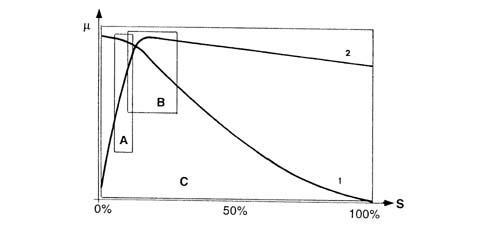
μ - Wheel grip S - Wheel slip A - EBD intervention area B - ABS intervention area C - ESP intervention area 1 - Side force curve (Y) 2 - Longitudinal force curve (X)
Applies to: all engines; all production periods; only with equipment: ESP
As may be seen from the grip/slip diagram, the ESP system covers a bigger area than a conventional ABS/EBD.
The ESP cannot be cut out because it is a safety system; the ASR function can, however, be cut out by means of a button on the central facia.
ESP system intervention is indicated by a special warning light on the instrument panel node.
Applies to: all engines; all production periods; only with equipment: ESP
The ESP system consists of:
- a special A.B.S. hydraulic/electronic control unit (with ESP function);
- interface with the C-CAN line resident in the ABS control unit for communication with the engine management control unit, steering angle sensor and lateral acceleration sensor;
- magnetoresistive wheel speed sensors;
- steering angle sensor (electric steering node);
- yaw/side longitudinal acceleration sensor accelerometer integrated within a single component with the C-CAN line
- brake fluid pressure sensor integrated in the ABS control unit;
- ABS-EBD-ESP-ASR-HH warning lights on the control panel controlled by serial line to dedicated NQS;
- ASR deactivation switch with warning light on button.
Applies to: all engines; all production periods; only with equipment: ESP
Introduction
The ESP system continuously detects loss of longitudinal and transverse wheel grip under all driving conditions, from braking to acceleration, to ensure vehicle directionality and stability.
The ESP system is managed by the ABS electronic control unit integral with a special hydraulic control unit that makes it possible for the brake system to be operated independently of the driver.
The control unit processes the following signals:
- steering wheel rotation steering angle;
- side acceleration and yaw;
- engine operating conditions;
- wheel rpm;
- hydraulic braking system pressure
From the values obtained it proceeses the figures for the dynamic control of the vehicle using special algorithms in the electronic control unit software.
- longitudinal and transverse slip between wheels and road surface;
- axle drift.
The system calculate actual vehicle dynamics from these values; identifying all critical conditions due to environmental factors, (e.g. surface with poor grip) or any mistakes made by the driver (e.g. panic situations) to restore the car to efficient handling conditions by adjusting the brakes and drive torque.
The system interfaces with:
- NCM for adjustment of the torque via the C-CAN line;
- instrument panel via the serial line for operating the warning lights.
System diagnosis is carried out via a dedicated line (K line).
The system is linked to a power unit with a special brake pump; the pipes between brake pump and ABS control unit are also fitted with a Titaflex insert because the pipe diameter is bigger than normal pipes. this is to prevent negative effects on ESP operation at low brake fluid temperatures.
The ESP comes on automatically when the vehicle is started up and cannot be switched off by the driver. the button on the central console turns off only the ASR function and only in recommended circumstances.
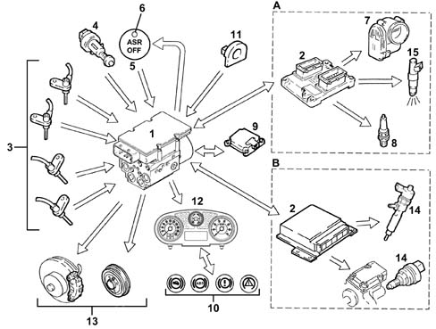
A - 16V petrol version B - JTD version
Applies to: all engines; all production periods; only with equipment: ESP
Introduction
INPUT SIGNALS
- wheel speed sensors (from direct line) (3);
- three stage brake pedal switch (from direct line) (4);
- ASR off button (from direct line) (5);
- engine management control unit (2) (from C-CAN line);
- throttle angle position (7) (from C-CAN line) (for certain versions only);
- instrument panel (12);
- warning light status indicator (from dedicated serial line) (10);
- yaw sensor (longitudinal) (from C-CAN line) (9);
- lateral acceleration sensor (from C-CAN line) (9);
- steering angle/steering wheel rotation sensor (from C-CAN line) (11);
- hydraulic system pressure sensor (from direct line) (1);
- acceleration sensor (from C-CAN line) (9)
OUTPUT SIGNALS:
- brake pressure modulation command (13);
- ignition advance reduction command (from C-CAN line) (8) (certain versions only);
- engine power management command (from C-CAN lien) (7) (certain versions only);
- injection time management command (from C-CAN line) (15) (certain versions only);
- injection time management command (from C-CAN line) (14) (JTD only);
- VSO signal (vehicle speed) (12);
- ESP-HH-ASR-ABS-EBD warning lights in panel operation (from dedicated serial line) (10);
- ASR off LED (6).
Applies to: all engines; all production periods; only with equipment: ESP
Operating strategies
As explained previously, the ESP controls longitudinal vehicle slip and also transverse slip, i.e. vehicle lateral stability.
Vehicle lateral stability is provided by tyre reaction to lateral forces due to an increase in centrifugal force.
The action of side forces brings about a change in wheel drift angle and thus a change in axle drift (drift angle = angular difference between required trajectory and actual trajectory).
The side forces do not act equally on all four wheels because the wheels are not subject to the same load conditions. Wheels are loaded differently in different situations. These situations are:
- acceleration (lightening of front axle and loading of rear axle)
- braking (loading of front axle and lightening of rear axle)
- right/left bend (loading of outside wheels and lightening of inside wheels);
- cornering while accelerating/decelerating (combination of the above cases).
It is obvious that if the lateral forces acting on the individual wheels varies there will be a consequent variation in the forces acting on the vehicle axles; when the lateral forces acting on the front axle overcome those acting on the rear axle and viceversa this produces a rotation (moment) on the vehicle's vertical axis (slewing axis).
The yawing moment affects car behaviour and generates a state of understeer or oversteer.
A vehicle is said to be understeered when the front axle drift angle increase to a greater extent than that of the rear axle when subject to increasing side acceleration. In this case, the car tends to go straight when turning a corner (it tends to take the curve wide).
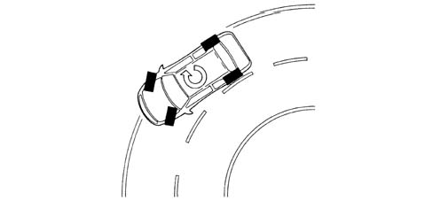
Applies to: all engines; all production periods; only with equipment: ESP
Operating strategies
A car is said to be oversteered when the rear axle drift angle increases to a greater extent than that of the front axis with increasing transverse acceleration. In this case, the vehicle tends to spin around (the rear axle tends to go straight and the vehicle cuts the corner).
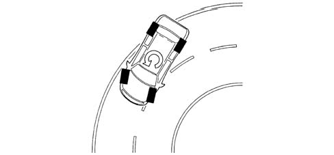
Applies to: all engines; all production periods; only with equipment: ESP
Operating strategies
To keep the influence of side forces under control and thus limit the yawing moment, the ABS control unit must firstly compute the vehicle behaviour set by the driver on the basis of:
- steering angle sensor;
- accelerator pedal position;
- braking system pressure;
- after which the control unit assesses actual vehicle behaviour by means of:
- the sensors on the wheels (car speed/wheel speed, individual and on axle)
- side acceleration sensor;
- yaw sensor.
- I - brake pedal sensor
The above shows that the control unit is able to:
- perceive the driver's actions because steering wheel position shows the number of degrees by which (large radius or short radius bend) and the speed with which the steering wheel is turned (sudden or gradual turns). Throttle position and brake pressure also show whether the car is accelerating or braking. In other words, how the driver takes the corner or deviates from a straight trajectory.
- perceive actual vehicle behaviour on the basis of environmental variables e.g. slippery surface, car reactions to incorrect manoeuvres by the driver etc. in order to identify yawing moment and axle side slip by means of sensors on all four wheels and the yaw and side acceleration sensor.
These two operations are necessary to compare the mathematical model mapped in the control unit with actual car behaviour in order to identify vehicle status (understeer or oversteer) and decide the action to be taken on the brakes and engine
Applies to: all engines; all production periods; only with equipment: ESP
Understeering on corners
The control unit monitors to detect understeer (prevalence of front axle drift) and corrects car behaviour by braking the wheels on the inside of the bend to create an opposite moment in order to bring the car toward the middle of the bend and reducing drive torque if necessary.
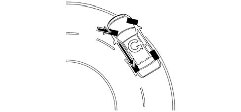
Applies to: all engines; all production periods; only with equipment: ESP
Oversteering on corners
The car detects the presence of oversteer (prevalence of rear axle drift) and corrects vehicle behaviour by braking the front wheel on the outside of the bend to create an opposite yawing moment, possibly augmented by an increase in the driving torque.
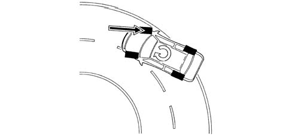
Applies to: all engines; all production periods; only with equipment: ESP
Abrupt changes in straight trajectory (swerving/overtaking)
In the case of abrupt changes in trajectory (e.g. overtaking/swerving, the control unit identifies possible oversteer or understeer conditions and correct vehicle trajectory as described above.
Applies to: all engines; all production periods; only with equipment: ESP
Abrupt change in straight trajectory (driving over different surfaces)
The control unit can preceive deviations from the trajectory and prevalence of axle drift, and corrects the trajectory with appropriate actions on the brakes and engine.
Applies to: all engines; all production periods; only with equipment: ESP
Emergency braking deceleration
when the pressure gradient exceeds a minimum threshold after the bakes are applied quickly. The system multiplies the pressure applied by the driver at the wheels to achieve maximum possible deceleration.
Applies to: all engines; all production periods; only with equipment: ESP
Intervention - intervention times in road conditions with good grip (asphalt)
Torque reduction by the engine control unit by altering ignition advances - 6/100 s after the threshold is exceeded.
Further torque reduction by reducing throttle opening (by the engine control unit with motorized throttle body) - after 15/100 s.
Hydraulic system intervention (braking force on drive wheel) - after 2/10 of a second.
Torque reduction via the engine control unit through the decreased fuel flow rate - after 6/100 of a second
Hydraulic system intervention (braking force on drive wheel) - after 2/10 of a second.
Applies to: all engines; all production periods; only with equipment: ESP
Operation under conditions of poor grip
The system is able to detect this situation by comparing drive wheel acceleration with torque transmitted by the engine (engine load via engine control unit).
The system performs in the same way as when both drive wheels are in road conditions with good grip (asphalt) and the cut in thresholds are at the lower limit.
Applies to: all engines; all production periods; only with equipment: ESP
Intervention - intervention times
Torque reduction by the engine control unit by altering ignition advances - 6/100 s after the threshold is exceeded.
Further torque reduction by reducing throttle opening (by the engine control unit with motorized throttle body) - after 15/100 s.
Intervention on the hydraulic system, a braking action is exerted on the wheel which is slipping; in this way a resistant force is guaranteed at the differential on the side with poor grip (TC). This resistive force allows the differential to transmit an equal torque with good grip.
Torque reduction via the engine control unit through the decreased fuel flow rate - after 6/100 s
Intervention on the hydraulic system, a braking action is exerted on the wheel which is slipping; in this way a resistant force is guaranteed at the differential on the side with poor grip (TC). This resistive force allows the differential to transmit an equal torque with good grip.
Applies to: all engines; all production periods; only with equipment: ESP
ASR exclusion
If the ASR is excluded the following functions remain active:
- ABS/EBD;
- TC up to a speed of 40 km/h;
- ESP HBA HH.
Applies to: all engines; all production periods; only with equipment: ESP
Cut-in thresholds
Cut-in threshold differences, from 2 to 6 km/h, depend upon environmental factors; some conditions have been described under the section on intervention conditions, others are:
- high acceleration, high thresholds;
- vehicle speed (see graph);
- type of tyres (normal or winter). With winter tyres and good grip, thresholds high; with winter tyres and poor grip, thresholds low. The system is able to detect this situation by comparing drive wheel acceleration with torque transmitted by the engine (engine load via engine control unit).
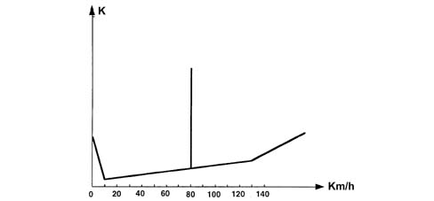
K - Slipping threshold
Applies to: all engines; all production periods; only with equipment: ESP
ESP intervention display
When the ESP system intervenes, a warning light on the control panel flashes (5 Hz d.c. 50%).
Applies to: all engines; all production periods; only with equipment: ESP
Warning light functions
The ABS control unit is able to carry out automatic diagnosis on the system and if a fault is found, the NQS is sent a code describing the affected function via a dedicated serial line to:
- deactivate the entire system;
- partly deactivate the system.
A warining light status and application type list is then shown.
Applies to: all engines; all production periods; only with equipment: ESP
Warning light operation
Warning light operating condition summary table
System status | ASR warning light on key | EBD warning light on NQS | ABS warning light on NQS | ESP warning light on NQS | HH warning light on NQS | |
|---|---|---|---|---|---|---|
Check (4s) | EBD/ABS/ASR ESP/HH.OFF For the first 500 ms | ON | ON | ON | ON | ON |
Running | EBD/ABS/ASR ESP/HH ON | OFF | OFF | OFF | OFF | OFF |
ASR deactivation from key (1) | EBD/ABS/HH ESP(2) ON ASR OFF | ON | OFF | OFF | OFF | OFF |
EBD faulty | EBD/ABS/ASR /ESP/HH OFF | ON | ON | ON | ON | ON |
ABS faulty | EBD ON ABS/ASR/ESP OFF HH ON/OFF | ON | OFF | ON | ON | ON |
ASR faulty | EBD/ABS ON ASR/ESP OFF HH ON/OFF(3) | ON | OFF | OFF | ON | ON/OFF(3) |
HH faulty | EBD/ABS/ ASR/ESP ON HH OFF | OFF | OFF | OFF | OFF | ON |
ESP faulty | EBD/ ABS/ASR ON ESP OFF HH ON/OFF | OFF | OFF | OFF | ON | ON/OFF(3) |
Low brake fluid or parking brake on | EBD/ABS/ASR/ ESP/HH ON | OFF | ON | OFF | OFF | OFF |
ASR/ESP in action | EBD/ABS/ASR/ESP/HH ON | OFF | OFF | OFF | Intermittent 4Hz d.c.50% | OFF |
HH in action | EBD/ABS/ESP/HH ON | OFF | OFF | OFF | OFF | ON |
System deactivation ends at key-off. The system comes back on automatically at each new key-on.
ESP operation limited to brake intervention.
Depends on fault type; if exhaust valves, speed value and communication on C.CAN is available, the function is maintained and the warning light is OFF.
Applies to: all engines; all production periods; only with equipment: ESP
Hydraulic system operation
The hydraulic unit on the version with ESP comes with 4 additional solenoid valves and an outlet pressure sensor.
The inlet solenoid valve (normally closed), when activated, can receive the additional quantity of fluid required to increase the pressure and brake the wheel/s.
The operating solenoid valve (normally open), when activated, allows the modulated pressure produced by the pump to be maintained in the circuit.
When the ESP does not intervene, the ECU:
- intake valve (2) is not activated;
- pilot solenoid (3) is not activated;
In this way, the system operates during the following stages:
- pressure increase;
- pressure maintenance;
- pressure reduction;
- restored supply and pressure increase;
- like the ABS system.
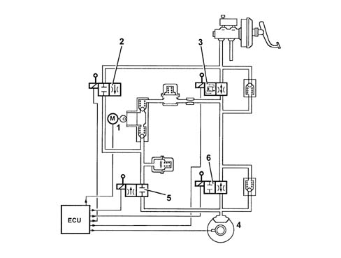
Applies to: all engines; all production periods; only with equipment: ESP
Hydraulic system operation
During ESP intervention, the ECU:
- activates the hydraulic aggregate pump (1);
- activates intake valve (2);
- activates pilot valve (3).
Then pressure generated by pump (1) then reaches the brake calipers and is modulated, upon a command by the electronic control unit, by the de-pressurizing (5) and pressurizing (6) solenoid valves.
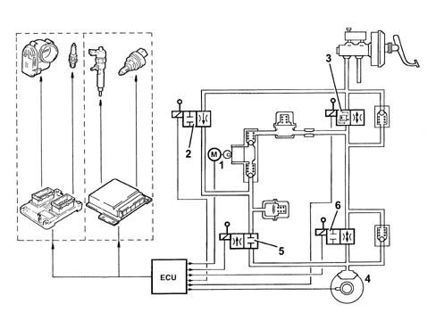
Applies to: all engines; all production periods; only with equipment: ESP
Electrohydraulic unit
The hydraulic control unit consists of an electronic control unit and a hydraulic control unit that incorporates a brake fluid pressure sensor.
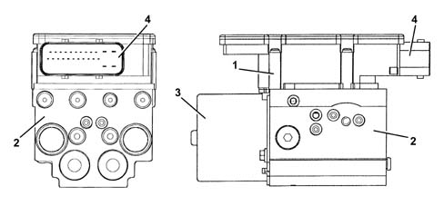
1 - Electronic control unit 2 - Hydraulic control unit 3 - Recovery pump unit 4 - 25 pin connector
Applies to: all engines; all production periods; only with equipment: ESP
Electronic control
The electronic control unit is responsible for:
- download data from the sensors
- memorizing the control parameters defined during car preparation;
- memorizing control software;
- processing dowloaded data;
- controlling the braking process;
- detecting failures at the braking system components
- storing fault codes and activating ABS/EBD/ESP/ASR/HH warning lights;
- transmitting and receiving data via the tester connection;
- communicating with the engine control unit;
- control ASR/HBA/ESP/HH functions;
- transmitting and receiving data via the C-CAN line.
PIN OUT
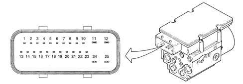
1 - CAN-L line 2 - CAN-H line 3 - ASR off switch 4 - ASR off warning light 5 - N.C. 6 - Diagnostic line K 7 - Front sensor positive left 8 - Front sensor negative right 9 - Rear sensor positive right 10 - Rear sensor negative right 11 - Solenoid earth 12 - Solenoid positive 13 - N.C. 14 - N.C. 15 - N.C. 16 - VSO (vehicle speed) 17 - Brake pedal sensor 18 - WL serial (instrument panel warning lights serial) 19 - L. front sensor positive 20 - L. front sensor negative 21 - Left rear sensor positive 22 - Left rear sensor negative 23 - VIGN (+ 15 ignition) 24 - Pump earth 25 - Electric pump positive
Applies to: all engines; all production periods; only with equipment: ESP
Hydraulic control unit
Responsible for modulating the pressure of the fluid at the brake calipers via two solenoid valves with the following stages:
- brake fluid pressure increase;
- brake fluid pressure maintenance;
- brake fluid pressure discharge.
Applies to: all engines; all production periods; only with equipment: ESP
Components
The electro-hydraulic control unit consists of:
- twelve two-way solenoid valves;
- a dual circuit electric recovery pump;
- two low pressure accumulators;
- two high pressure accumulators;
- brake fluid pressure sensor;
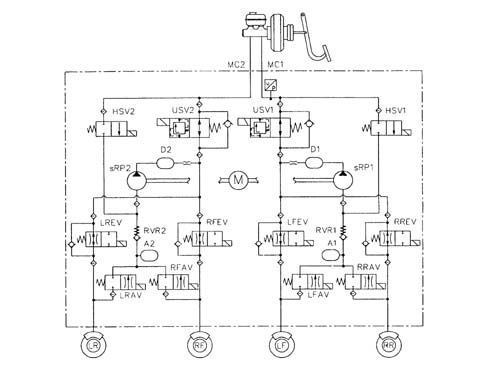
Applies to: all engines; all production periods; only with equipment: ESP
Function
The steering angle sensor detects steering wheel angle and turning speed and makes the data available to the C-CAN network (steered angle sensor node).
Applies to: all engines; all production periods; only with equipment: ESP
Location
The steering angle sensor is located inside the electric steering gear mechanism (1) integral with the steering torque-position sensor.
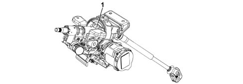
Applies to: all engines; all production periods; only with equipment: ESP
Pin out
the sensor comes with a four pin connector, two pins are used to supply the sensor and two for the C-CAN line
Pin 1, Earth
Pin 2, +15 positive
Pin 3, C-CAN H Line
Pin 4, C-CAN H Line
Applies to: all engines; all production periods; only with equipment: ESP
Operation
The sensor measures the following using its internal electronic system:
- the steering column angular position
- the steering column rotation speed.
This information is processed directly by the sensor and made available to the brake node via the C-CAN network
The sensor has an angular measurement range of 1020° and an angular resolution of 0.1°.
The sensor must be set to the steering wheel position in order to work properly. This setting is carried out using a Tester (see instructions provided with the EXAMINER device).
The sensor comes with an automatic diagnosis function and is able to check the plausibility of information processed.
Applies to: all engines; all production periods; only with equipment: ESP
Operation
The lateral yaw/acceleration sensor detects rotations about the vehicle vertical axis (yaw) and measures side accelerations and gradient (ascent/descent).
The connection to the ABS control unit is sent via the C.CAN.
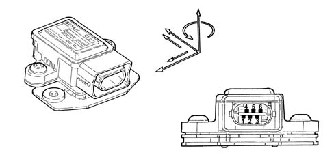
Applies to: all engines; all production periods; only with equipment: ESP
Operation
Sensor operational specifications are as follows:
Supply voltage:
- Minimum value 8.2 V
- Maximum value 16 V
- Rated value 12 V
Operating temperature:
- Minimum value -40°C
- Maximum value +85°C
Current uptake at 12 V:
- Rated value 70mA
Yaw sensor:
- Measurement range ±100°/s
- Risolution ±0.3°/s
Side acceleration sensor
- Measurement range ±1.8 g
Applies to: all engines; all production periods; only with equipment: ESP
Components
The sensor consists of an aluminium case that encloses the sensitive parts that detect lateral yaw and acceleration and also a gradient of >2% in relation to the electronic control system.
The sensor comes with a six pin connector - all pins are connected.
Applies to: all engines; all production periods; only with equipment: ESP
Pin out
Pin 1, VIGN (+15 start-up)
Pin 2, CAN-H line
Pin 3, CAN-L line
Pin 4, CAN-H line
Pin 5, CAN-L line
Pin 6, Earth
Applies to: all engines; all production periods; only with equipment: ESP
Location
The sensor is located in the centre of gravity beneath the central console.
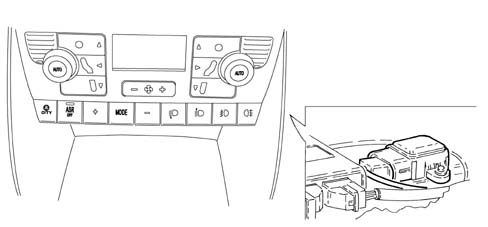
Applies to: all engines; all production periods; only with equipment: ESP
Operation
The sensor is supplied from the NBC and supplies a yaw and acceleration signal simultaneously via its sensitive elements to the C.CAN.
Applies to: all engines; all production periods; only with equipment: ESP
Specifications
For active sensors see ABS system 3340 A(B.S. ANTI-LOCK BRAKING SYSTEM .).
Applies to: all engines; all production periods; only with equipment: ESP
Operation
Deactivates the ASR/MSR system and comes with indicator leds
Button (1) is built into the lower part of the climate control system panel.
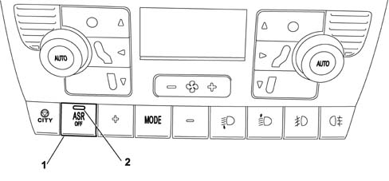
Applies to: all engines; all production periods; only with equipment: ESP
Introduction
The Hill Holder system is not a safety or vehicle parking feature but a comfort feature designed to complement the ABS software.
The HH feature supports the driver during hill starts. The HH automatically delivers enough brake torque to hold the car so that the clutch is not fully released and the engine torque is high enough to start the car comfortably.
The system is very useful in the situations described below:
Applies to: all engines; all production periods; only with equipment: ESP
OPERATION
The HH activates automatically when the brake pedal is pressed under the following circumstances:
- vehicle speed equal to zero, gradient greater than 2% and clutch pedal pressed.
When the brake pedal is released, the Hill Holder maintains the brake system under pressure for 2 seconds without altering the other conditions to give the driver time to move his or her foot from the brake pedal to the accelerator pedal without the vehicle moving backwards and without the use of the parking brake.
Once the accelerator has been pressed, the Hill Holder keeps the car still for an additional 10 seconds or until engine torque is high enough to move the car.
The time stated (2+10 secs) is a maximum time that the control unit varies (i.e. reduces) when the succession of movements (brake pedal/acceleration/sufficient torque) by the driver takes place more rapidly.
Conversely, if the driver does not press the accelerator within the first 2 seconds following brake pedal release or the required torque is not achieved within the 2 extra seconds,t he HH removes pressure from the hydraulic circuit at a rate of -1 bar every 0.02 seconds in order to ensure the car does not set off jerkily.
Under conditions of poor grip, the HH is deactivated. This happens because if the HH held the wheels locked on an icy gradient, the vehicle would slip back (this is an extreme condition).
A slip recognition test is activated under these extreme conditions. and cuts in when the ABS, ASR has been activated or a wheel has locked immediately prior to HH activation.
During the test stage, the control unit finds out (using ABS parameters) which wheel is most stable and then discharges brake pressure on that wheel while maintaining the other 3 braked.
If the speed sensor on the unbraked wheel detects a speed other than zero, this means the car is moving despite the fact that the other wheels are locked; this indicates a situation of low grip and the HH is deactivated to release pressure throughout the brake circuit.
Conversely, if the unbraked wheel remains still, this means that the situation is stable and the HH thus continues to operate.
The slide test lasts about 150 msecs.
Applies to: all engines; all production periods; only with equipment: ESP
Basic specifications:
.
- automatic activation with speed zero and vehicle gradient > 2%.
- NQS fault warning light management
- pressure maintenance time is 2+10 secs
- automatic deactivation after acceleration, clutch release or exceeding of maximum time
Applies to: all engines; all production periods; only with equipment: ESP
Signals and sensors required:
.
- reverse engaged from C.CAN
- clutch status from C.CAN
- accelerator pedal status from C.CAN
- brake pedal status from C.CAN
- engine torque level from C.CAN
- engine rpm from C.CAN
- longitudinal or gradient sensor from C.CAN
- brake pressure sensor (built into ABS control unit)
Applies to: all engines; all production periods; only with equipment: ESP
H.B.A. (Hydraulic Brake Assist).
This aids the driver during emergency stops when the brake pedal is applied quickly and maintenance load is low.
Applies to: all engines; all production periods; only with equipment: ESP
Basic specifications
An ESP system must be present, because the basic activation parameter is hydraulic control unit input pressure.
Applies to: all engines; all production periods; only with equipment: ESP
Operation
Because the HBA function is implemented in the control unit SW, when the pressure gradient exceeds a minimum threshold after a fast brake application (emergency stop), the system multiplies the braking pressure at the wheels applied by the driver to maximise deceleration.
The function is disabled below a minimum vehicle speed threshold.